%20%5BFULL%5D.png)
%20%5BFULL%5D.png)
%20%5BFULL%5D(1).png)
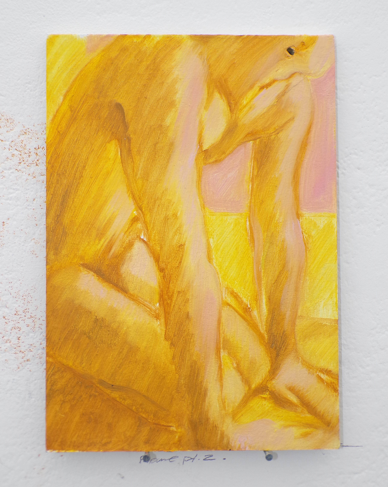
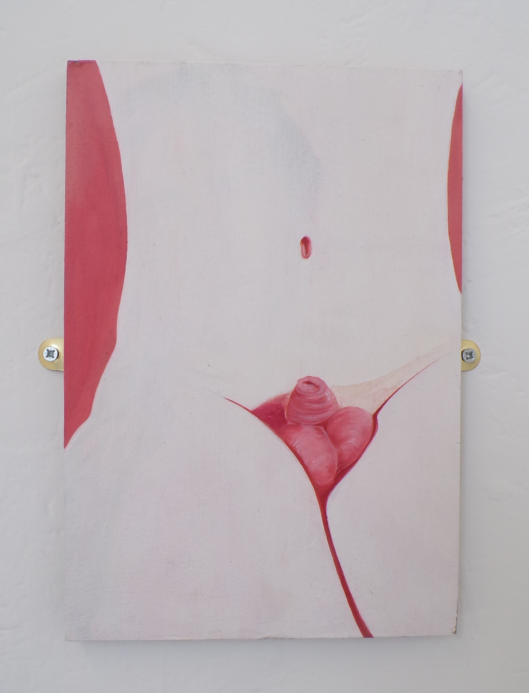

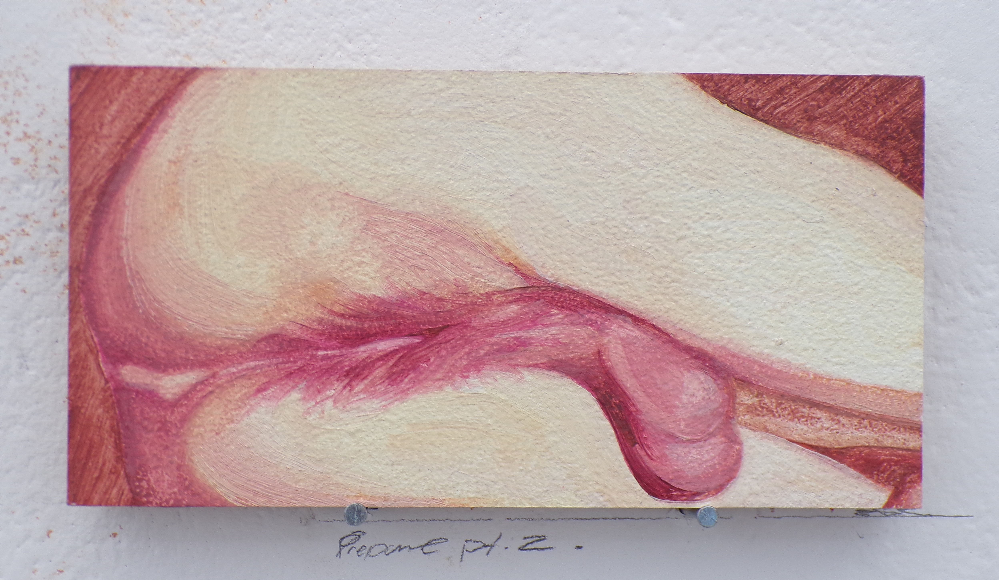
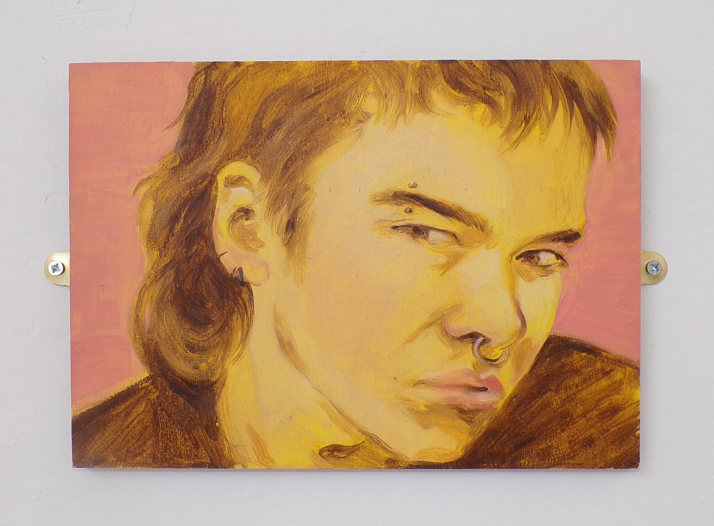

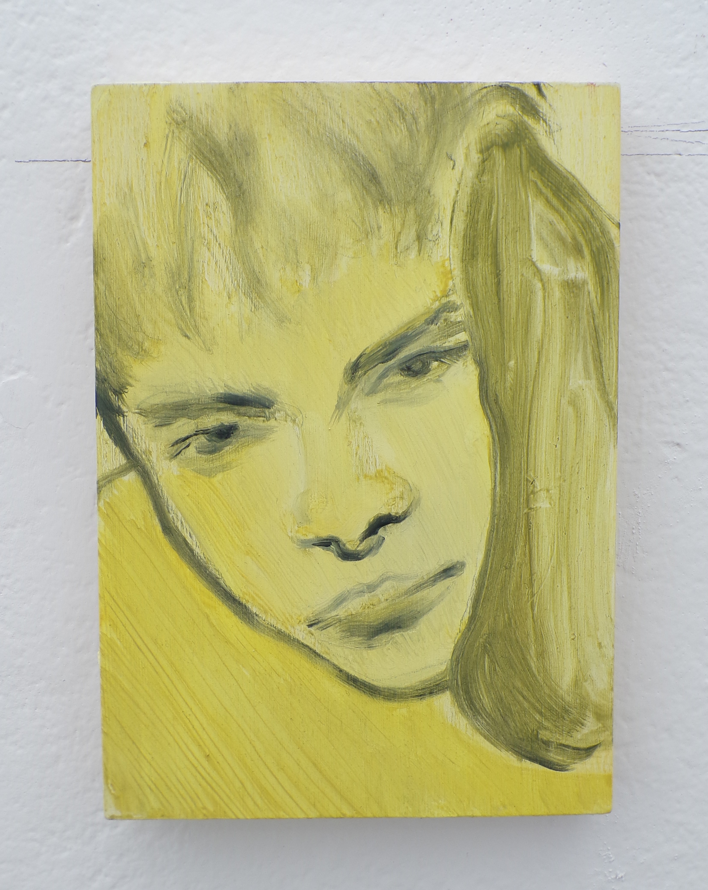
.JPG)
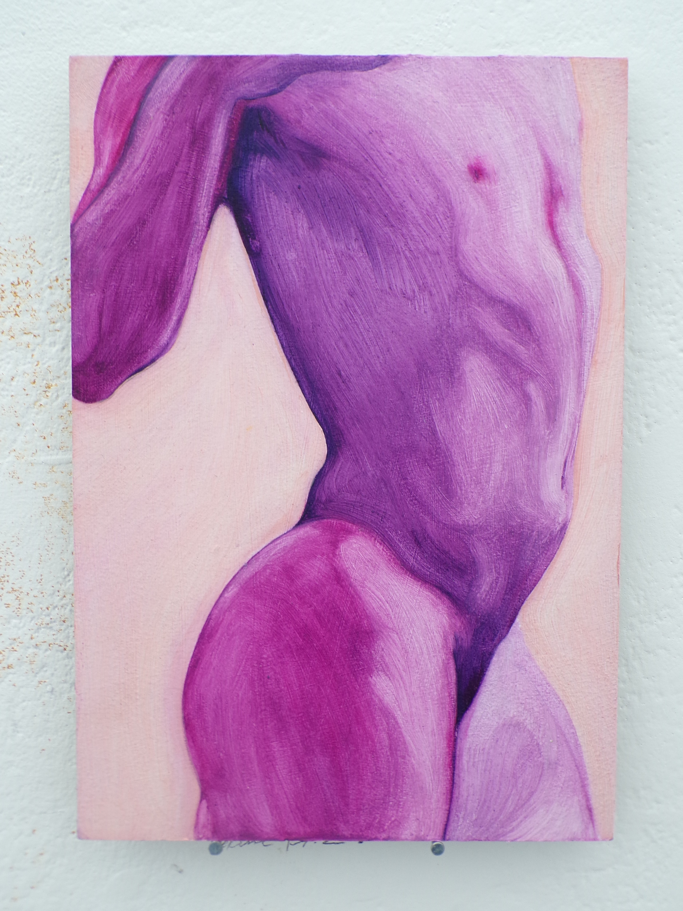
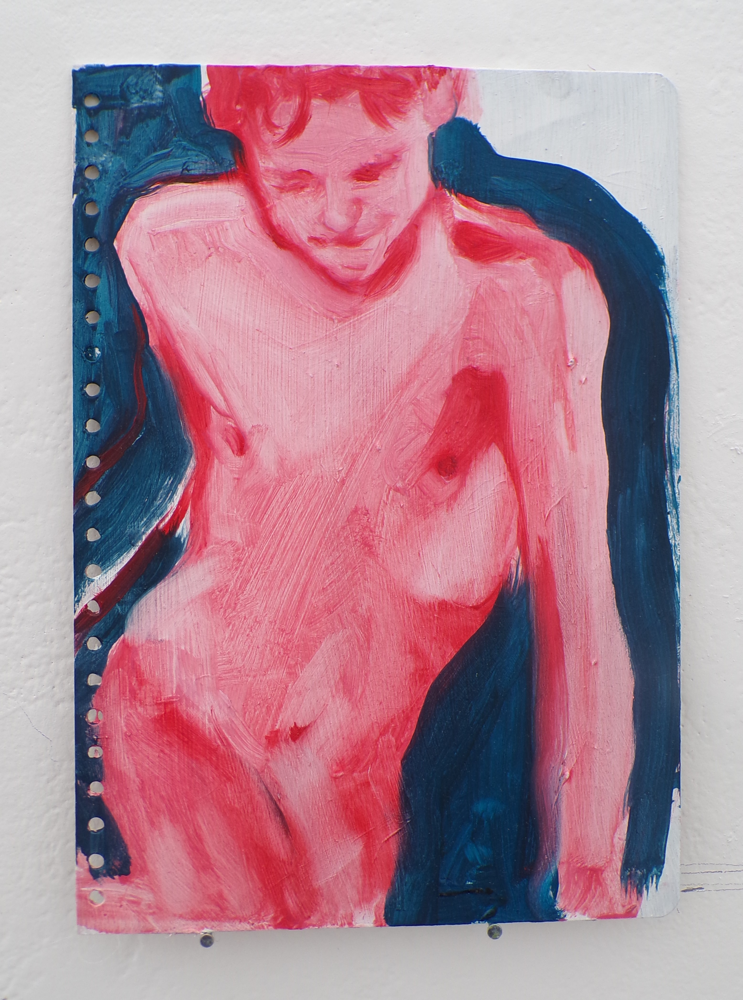
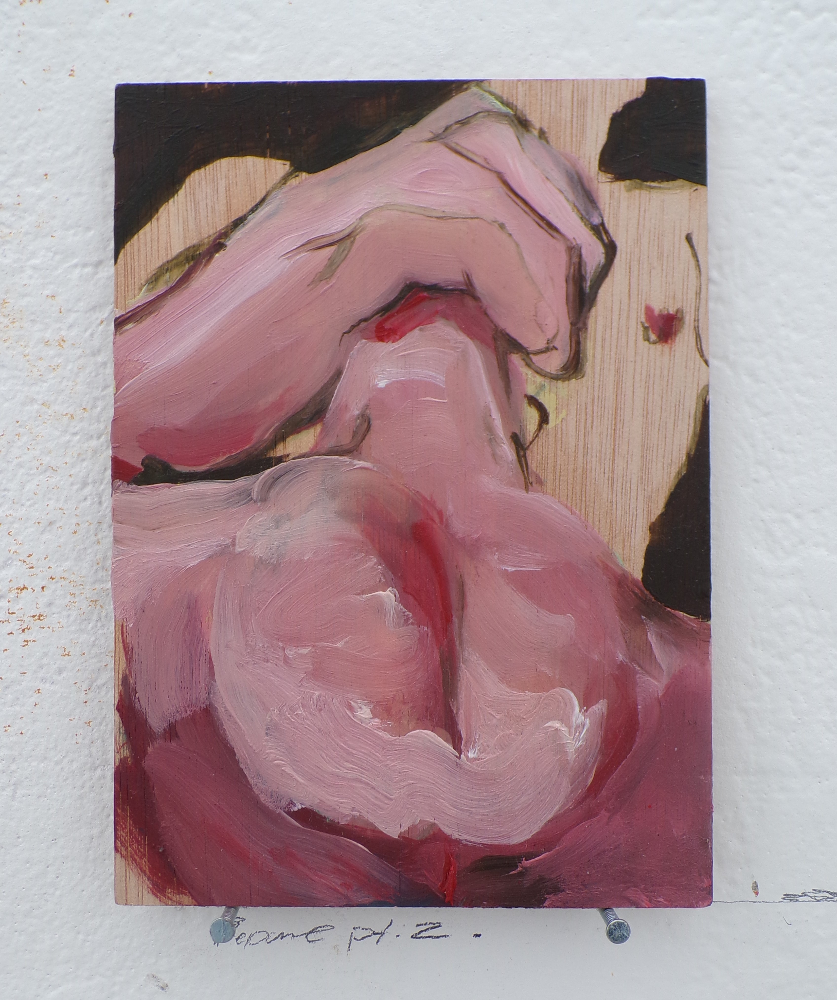
.JPG)
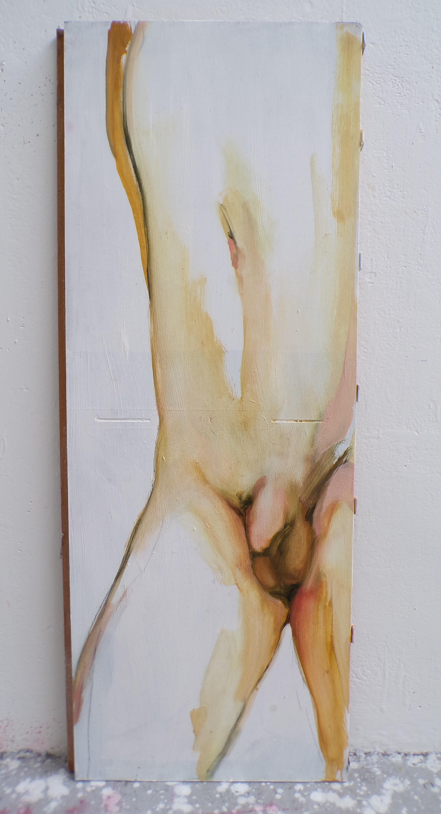
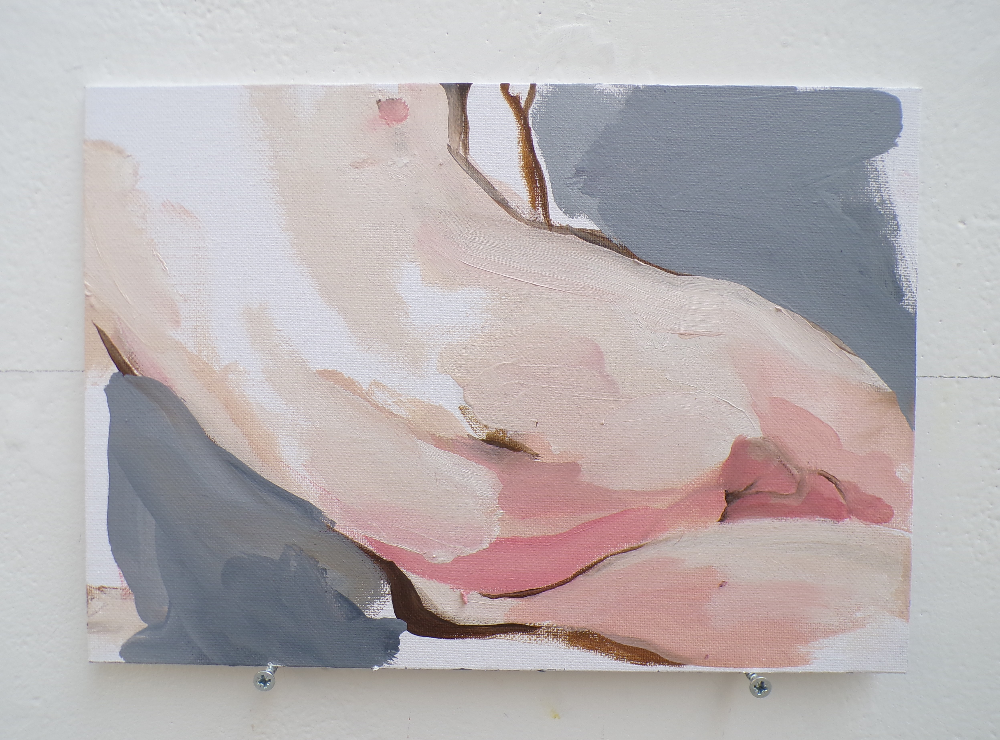
Works on paper


Exhibitions
2026 - Espacio Gallery, "Love is Love" Exhibition, London
2026 - University of Brighton Degree Show, Brighton
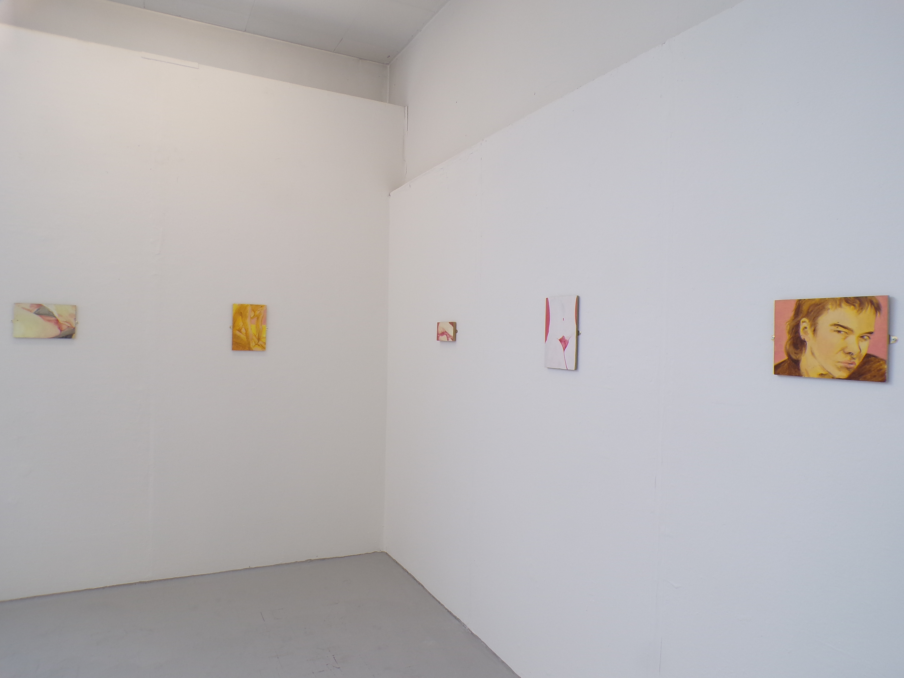
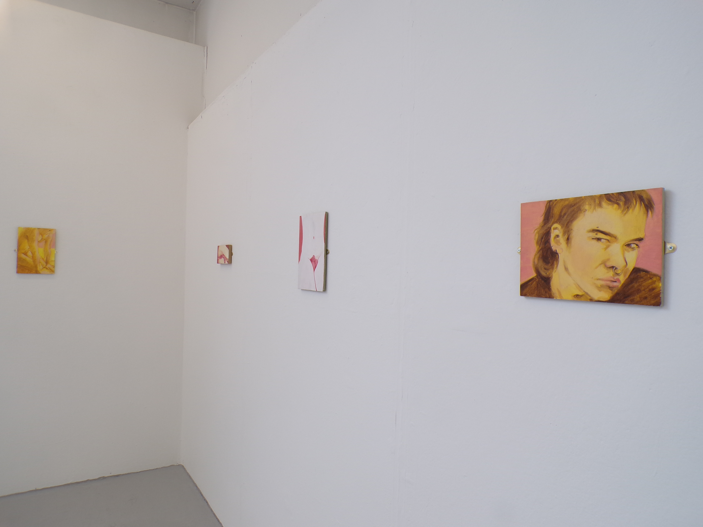
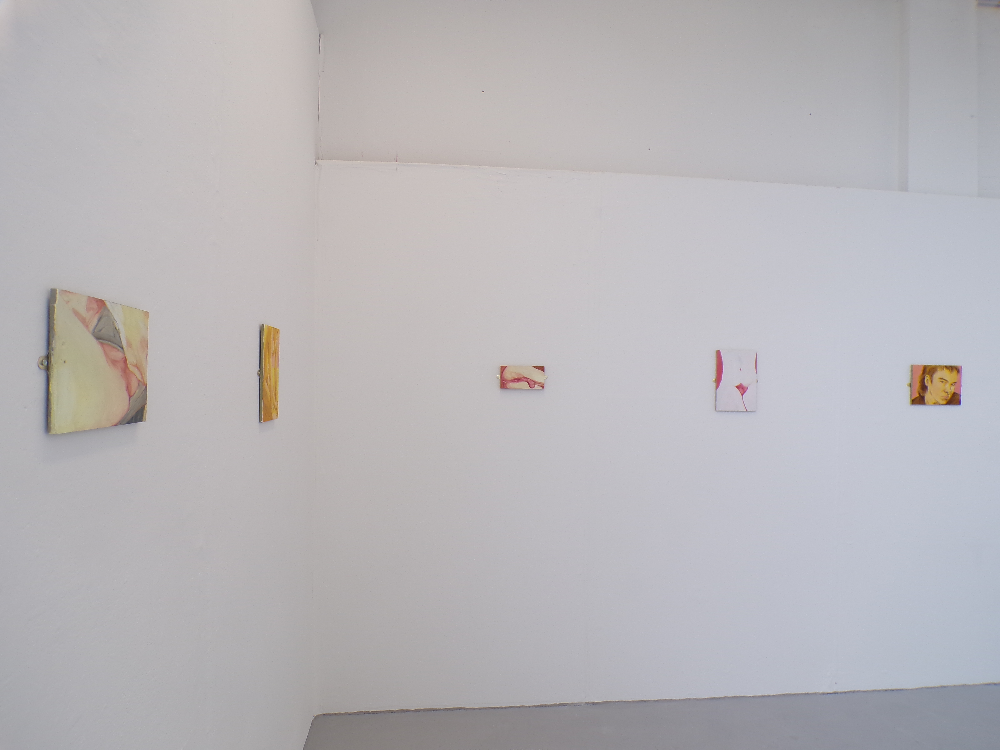
Bio
Casper Little (b. 2005) is a Dorset-based painter and early-career artist. He graduated with First-Class Honours in BA Fine Art (Painting) from the University of Brighton in 2026. His work has been exhibited in London, Dorset and across East Sussex, including most recently Espacio Gallery in London. Rooted in queer visual culture and personal relationships, his paintings bring together cultural and intimate histories. His ouvre considers masculinities as continually constructed and negotiated, questioning inherited visual codes while exploring tenderness, vulnerability and desire.
Artist statement
My work navigates zones of desire surrounding the male body, occupying a zone between eroticism and dysphoria. Working from photographs of those close to me, I approach my practice as queer documentation and mediation. The paintings explore my relationship to masculinity and the masculinities around me, alongside broader questions of subject visibility within art history and contemporary image culture. In this, the visibility of alternative masculinities is central, making space for a vulnerability within representations of the male body.Through repetition of the male form, I attempt to manufacture an unstable assimilation between subject and self; the figures become men by my hand, while I simultaneously attempt to become through them. Informed by gender theory and melancholic formations of gendered identity, the work approaches masculinity as continually produced through unresolved attachments and repressed desire. Situated within queer historical representation, I use painting to examine how the repeated looking at and depiction can produce, reinforce, or unsettle utopic masculinities.
Material process is central. Compositional cropping and affect-projective paint handling construct an aroused gaze, concentrating attention on bodily fragments and contact. These interventions collapse touch and recollection, allowing desire to alter perception and representation. Transparency and incompletion allow figures to fluctuate between visibility and disappearance, reflecting tensions between private looking, public visibility and performed masculinity. The paintings are suspended within becoming, where masculinity operates as an ouroboros, continually constructed and undone under its own gaze.
Contact
Instagram: @Casperfinleyart
Email: casperlittle20@gmail.com